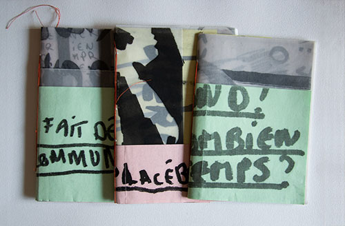
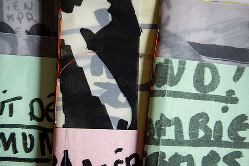
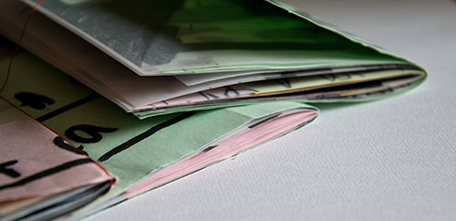
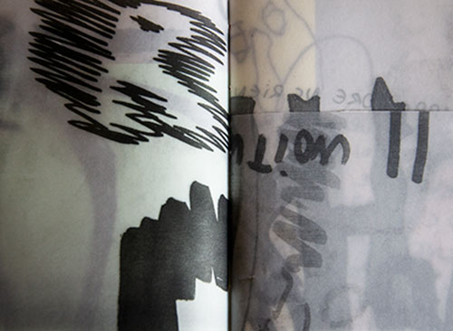
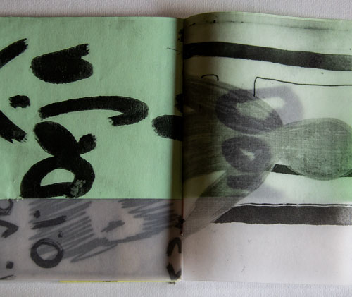

Project: Creation of a fanzine dealing with the notion of dirt. This includes three meanings: dirty senses, material dirt, physical and mental dirt.
 Description: I made two ranges of sketchbooks about self-censorship, drawings, and notes expressing fear of other’s judgment. The first range is kept secret in order to keep this self-censorship. The second range of sketchbooks is made out of scaled drawings and texts. The final result takes the form of an A6 fanzine, made of tracing and colored papers (such as rough exam paper). The various scales enhance the intimacy, the tracing paper guarantees the clarity of the message. However, those two characteristics are at the same time moving us away from the message and bringing us closer. The layers accumulate with the transparency of the tracing paper make readable the message, then there is still a certain kind of censorship.
 Purpose: Reveal self-censorship through: the clumsy and feverish practice of drawing, the difficulty to make choice, and the self-censorship in graphic design job, who sometimes suffer from creative frustration.
